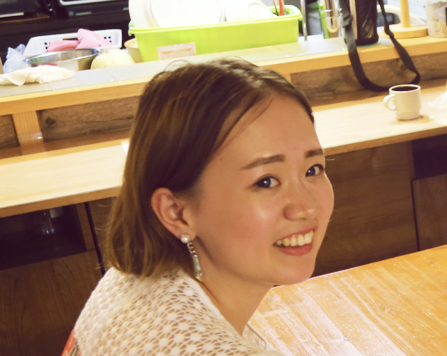

Sylvia Zhang

Summary
hello
Education
- Master of Engineering, Software Engineering - Jiangnan University, China
- Bachlor Degree
Work Experience
-
Social Media Specialist
January 2021 - May 2022
- Led the event project for the tourism client to design & build the landing page on woobox
website, which generated more than 2000+entries and increased sales by 40%
- Developed and optimized Facebook Ad to increase Click Through Rate & Link clicks by 30%
- Provide training for to help team members shorten the transition time by one week
-
Java Teacher
June 2018 - October 2019
- Taught Grade 11 credit course ICS3U: Introduction to Computer Science using BlueJ IDE
- Designed the practical course plan & tests to help students make small projects like
calculator using Java at the end of the course, and 95% of them achieved this goal.
- Organized school events from start to finish, which increased program registration by 60%
and helped more 500 students connect with their instructors
Skills
-
Programming Lanuages:
JAVA ⭐️⭐️⭐️⭐️⭐️
SPRING BOOT ⭐️⭐️⭐️⭐️
HTML⭐️⭐️⭐️⭐️
CSS⭐️⭐️⭐️
JAVASCRIPT⭐️⭐️⭐️
- Database: MySQL
- Tools: Eclipse, My Workbench, Docker Hub, CircleCI
Certifications
- Oracle Certified Professional: Java SE 11 Developer(2022)
- Digital Marketing Certificate - York University(2020)
Other